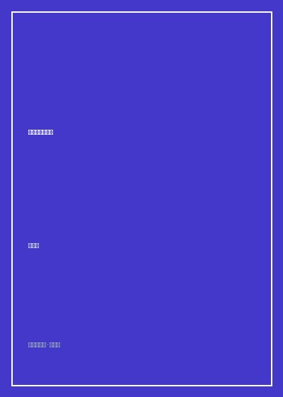

《组织社会学十讲》

总体观点
现代组织并非单纯追求经济效率最大化的精密理性仪器，更是嵌入在复杂社会网络与制度环境中的文化存在。面对合法性机制与技术效率的内在冲突，组织往往通过‘形式与实际的松散勾连’（Decoupling）来化解两难：表面上遵循宏大象征性制度仪式，暗地里则保留非正式运作空间以维系实际运转。
系统解析中国国家治理中的核心结构性矛盾——‘中央集权的统一性’与‘地方治理的有效性’之间的持久张力。在严密自上而下的考核指标重压下，基层政府为了达成看似不可能的任务，必然自发演化出‘变通执行’、‘共谋行为’与‘项目制包裹’等一系列非正式制度应对策略。
组织社会学为理解中国社会的转型提供了一把极具解释力的解剖刀。从韦伯科层制理想型、交易成本经济学，到社会资本与组织网络，作者将艰深的西方社会学理论化为理解中国地方官员行为、企业改制与官僚内耗的生动钥匙。
核心观点
-
1. 合法性机制与制度同形
新制度主义指出，组织之所以采取某种架构，往往不是因为它效率最高，而是为了获取外界环境的认可与合法性。强迫性机制、模仿性机制与规范性机制导致同一领域的组织结构高度趋同。
各大高校不论自身学科特色与师资基础如何，纷纷跟风盲目设立金融学、软件工程与人工智能学院，以迎合教育部评估与社会投资偏好。 -
2. 仪式化应对与松散勾连
当上级下达的红头文件要求与一线实际生产条件严重脱节时，基层组织通过制定完美无瑕的台账报表来完成检查‘仪式’，而在生产车间内部依旧按老经验办事，实现制度的隔离缓冲。
企业在通过ISO9001质量管理体系认证时，全员连夜突击抄写整齐划一的质检流程档案，一旦审计专家离场，生产线立即恢复原有的灵活赶工节奏。 -
3. 基层政府的共谋行为逻辑
面对上级部门层层加码且彼此冲突的硬性考核任务（如既要保GDP又要环保关停还要保稳定），乡镇政府与县直机关往往达成隐秘默契，互相通风报信应付检查，这是官僚体制应对过度负荷的生存本能。
督查组下乡暗访秸秆焚烧时，县农业局提前将路线通知乡镇，乡镇干部连夜调动洒水车在主要干道两侧巡逻扑灭明火，督查一走田野依旧复燃。 -
4. 项目制治理与体制机制变通
中央为了打破部门利益壁垒推行‘专项转移支付’的项目制运作，地方政府则通过精湛的文字包装与‘拉项目’跑部钱进，将专项扶贫资金灵活拆借填补常规行政经费窟窿。
某贫困县将‘文化生态长廊’项目经费巧立名目用于修建县政府通往新城区的柏油主干道，完成了招商引资硬件指标与专款核销的双重合规。 -
5. 关系网络作为组织间协作滑润剂
在正式科层指令无法穿透的横向部门协作孤岛之间，官员与企业家之间的私人熟人网络、校友会与饭局私谊扮演了隐性担保人角色，大幅度降低了跨部门协作的摩擦成本。
两个平级行政局在公文流转中往往踢皮球数月毫无进展，但由于两位分管副局长是大学同窗，在一通私密电话沟通后便在数日内协同盖章放行。
全书结构
-
第一讲 组织社会学导论：理性、结构与环境
界定组织社会学的研究视阈，梳理从古典管理学泰勒制、人际关系学派到现代组织理论的范式演进图谱。
分析霍桑实验如何意外发现工人群体自发形成的非正式定额潜规则，揭示组织内部情感交往对生产效率的决定性影响。 -
第二讲 韦伯的官僚制理论及其批判
剖析马克斯·韦伯科层制（官僚制）的理想型特征及其技术理性优势，反思科层制僵化诱发的‘铁笼’异化困境。
以默顿提出的‘目标置换’现象为例，展示官僚为了程序百分百合规而故意延误危重急症病人医保报销审批的制度荒谬性。 -
第三讲 组织与市场：交易成本学派
引入科斯与威廉姆森的交易成本理论，探讨企业组织与市场契约的边界划分，分析资产专用性与有限理性。
汽车主机厂决定是自行投资冲压车间还是外包给第三方供应商，取决于模具专用性带来的事后敲竹杠风险溢价。 -
第四讲 组织的新制度主义学派（上）：制度环境与同形机制
详尽讲解迈耶、罗恩与迪马吉奥的新制度主义经典命题，解析合法性机制如何塑造现代组织的趋同骨架。
分析全美各大公司为何在短时间内纷纷设立几乎毫无实权但名头响亮的‘首席多元化官’（CDO）职位以迎合平权运动审查。 -
第五讲 组织的新制度主义学派（下）：象征性应对与松散勾连
深入探讨组织如何通过‘双重账本’、仪式性报告化解外部合法性压力，确保内部技术核心免受外部环境频繁干扰。
分析公立医院在医保DRG控费检查前夕，医务科如何指导一线科室通过调整出院诊断主副代码实现完美的纸面控费指标。 -
第六讲 社会资本与组织网络
从格兰诺维特‘弱关系的优势’到林南的社会资源理论，解析社会网络在求职、信息传递与组织间联盟中的关键价值。
实证展示高科技企业核心研发总监的跳槽往往不是依靠公开猎头招聘，而是通过学术会议茶歇期间跨机构旧友的私密引荐促成。 -
第七讲 中国国家治理的组织机制与结构性张力
将组织理论创造性运用于中国实证研究，解构中央一统体制与地方分权治理之间的‘集权-失灵-放权-混乱’钟摆循环。
剖析中央环保督察工作组入驻期间地方政府出台的‘运动式治污’举措，与督察离开后常态化排放反弹之间的体制博弈机制。 -
第八讲 基层政府行为：变通、共谋与项目制
深入中国基层田野现场，记录乡镇干部面对指标重负时的行为逻辑，论证非正式运作如何吊诡地成为正式体制维持运转的减震阀。
记录沿海某省数个相邻乡镇为了应付上级‘拆违还耕’遥感卫星抽查，相互租借同一批挖掘机与移动集装箱板房摆拍归档的真实调研细节。